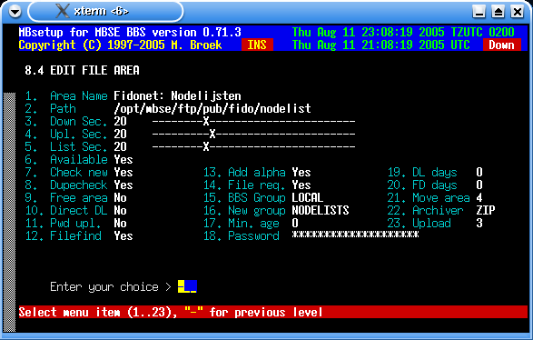

Last update 11-Aug-2005
MBSE BBS Setup - BBS Setup - File Areas.
File Areas introduction.
This is the setup for the file areas in which users can up and download files. This database has fixed area numbers, the database can't be packed. Extending the database is allways possible. One important note, before you can set this up, you need to define the newfiles groups.
If you change the path in an existing area, all files in that area are automatic moved to the new location.
File Areas Setup.
Area Name The area name.
Path The full path to the file area.
Down Sec. The download security level.
Upl. Sec. The upload security level.
List Sec. The security level to list the files in this area.
Available If this area is available. If you make an available
area unavailable the area is checked if there are
downloadable files in that area. If so, you can't remove
the area. If there are none you will be asked if you are
sure. After the area is made unavailable, the record is
filled with reasonable default values.
Check New Check this area for new files if a user logs in.
Dupecheck Check this area for duplicates if a user uploads a file.
Free area If all files in this area are free.
Direct DL Allow direct download from this area.
Pwd upl. Allow users to password protect their uploads.
Filefind Search in this area for filefind requests.
Add alpha Add .tic files alphabetic sorted or at the bottom of the list.
File req. Allow File Request from this area.
BBS group Not in use yet.
New group New files announce group. See Newfiles groups for more info.
Min. age Minimum user age to access this area.
Password The password for this area. If blank, no password is needed.
DL days How long must a file not been downloaded to (re)move it.
FD days How old must a file be to be (re)moved.
Move area The area to move the file to, if zero it is deleted.
Archiver The archiver to use to repack the files with.
Upload Alternate upload area. If a user uploads a file in this
area, it will be placed in the alternate area. If the
value is zero, the file will be placed in the current
file area. On CD-rom areas you must not leave this zero
unless you set the upload security level so high that
nobody can upload in this area.

 Back to BBS index
Back to BBS index